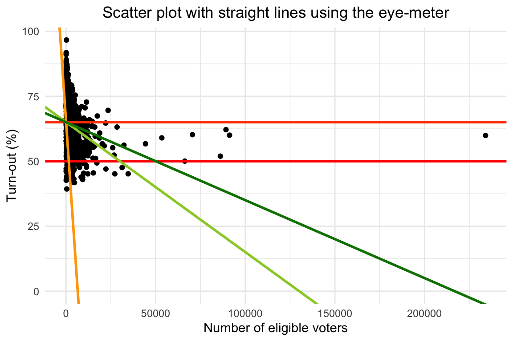
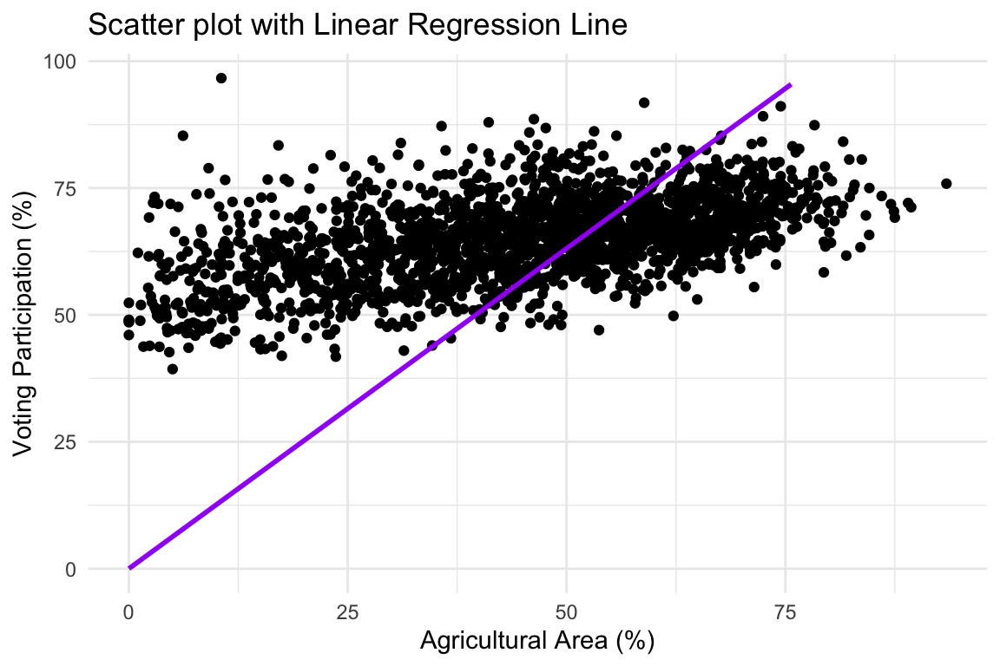
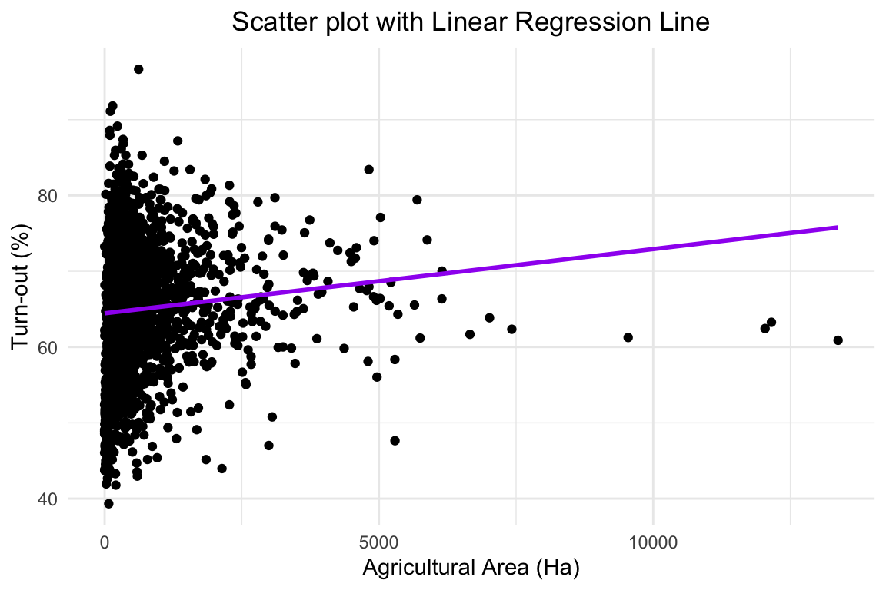
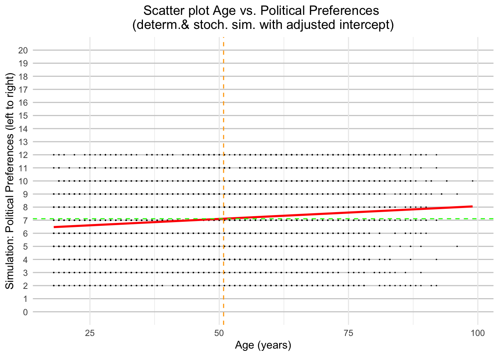
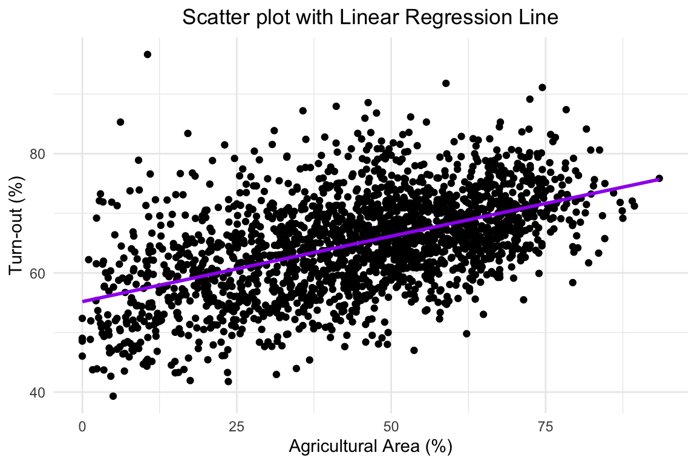
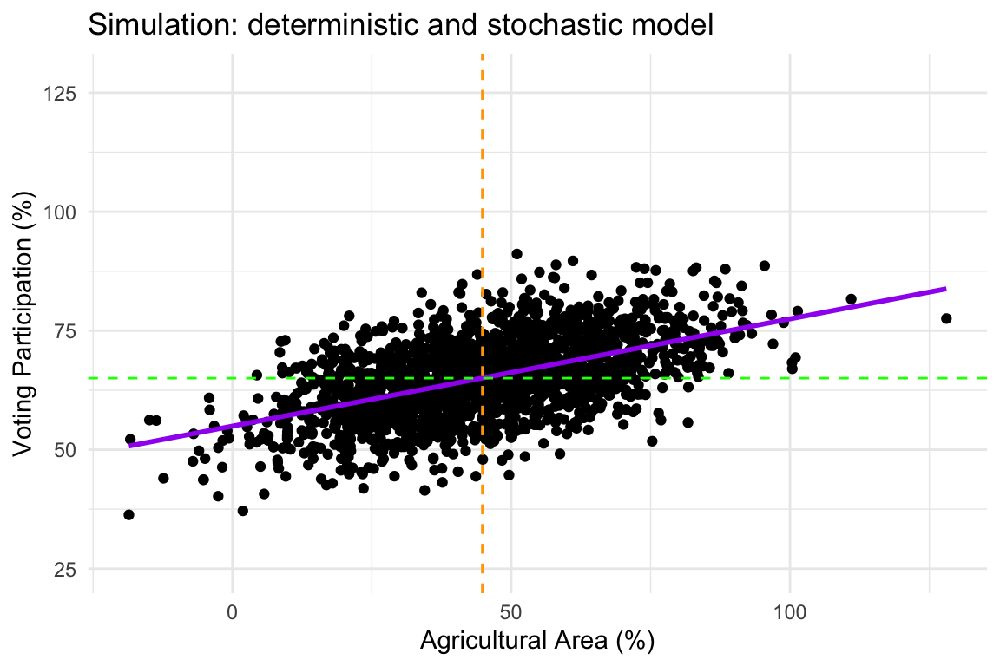
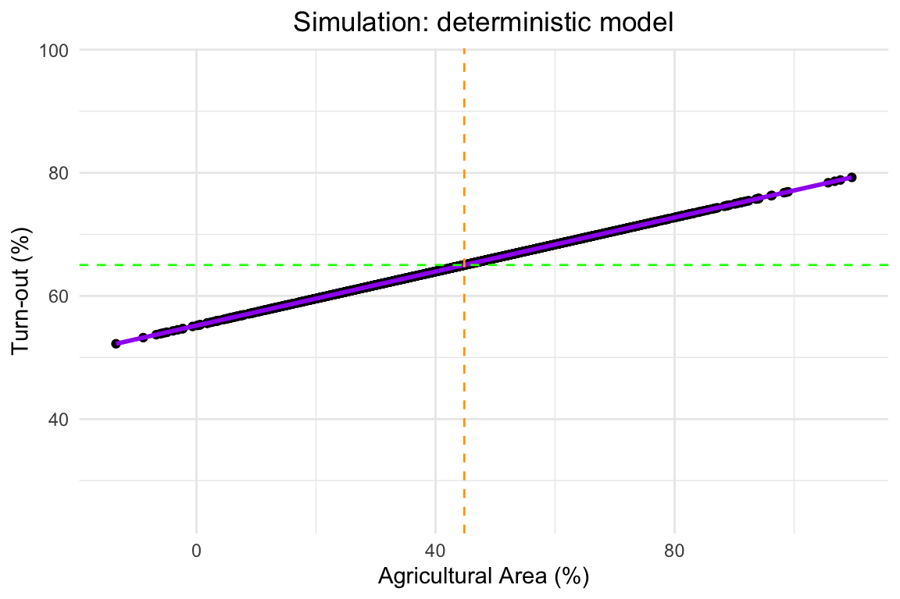

Chapter 3 Week 3: Regression I (Prediction)
3.1 Aims
- Using regression analysis for quantitative descriptive purposes with real data
- Using simulation to instantiate how different properties of the data generating process alter the reliability of regression analysis
3.2 Exercise: Context and Question
As developed in the following entry, a referendum took place in 2021 to assess whether Swiss citizens approved or not a bill aimed at reducing greenhouse gas emissions.
The bill was rejected by a narrow margin: 51.6% of votes went for the “No”, while 48.4% for the “Yes”. In the media, some analysts commented that a marked division or cleavage between rural and urban voters seems to have led to this result: a specially high rural turn-out seems to underlie such result. As the analyst commented, most urban inhabitants liked the bill while most rural inhabitants disliked it.
Not satisfied with a simple impression, as a political scientist you want to quantitatively qualify your understanding about what happened in that election. Particularly, you want to know:
- Given that more rural municipalities have smaller populations, was the turn-out higher in municipalities with smaller populations than in bigger ones?
- Was the turn-out higher in more agricultural municipalities than in less agricultural ones?
Thus, to analytically describe the voting results, you will perform some regressions using the following data.
3.3 Getting the data first
To get the data, you will use an API (application programming interface). Put plainly, for the sake of this exercise you can think of an API like a waiter to whom you make a request and who gets what ever you requested from the kitchen (a remote data source).
In this case, you will use two APIs: to get election results in Switzerland, swissdd, and BFS to get many other kinds of statistical information. Both APIs get information from the Federal Statistical Office (Bundesamt für Statistik).
Skimm the functions of the Swissdd package. Then, inspect the codebook to understand what for the columns and rows stand for. Do not use more than 5 minutes doing it.
To get the data, simply execute the following code. We present you with the code so, if you want, you can know how it works and you can play around with it on your own following the code’s logic.
Install the Swissdd package
#First option - from CRAN. If you install it from the github repository, make sure you have the `devtools` installed in advance.
#install.packages("swissdd")
#Second option
# install.packages("devtools") # it is necessary to comment the install.packages so the book can be rendered
devtools::install_github("politanch/swissdd")
# library(swissdd)Retrieve the CO2 Act information using get_nationalvotes. The vote took place in 13/06/2021.
As the same day of the CO2 Act vote more initiatives were voted, keep only the one we care about for this exercise. Notice that each initiative has a numerical identifier called id. Here you can find the numerical identifier under Vote Nº. Keep in mind that, the variable id has the same number as in Vote Nº with an additional zero to the right.
The resulting data frame contains rows representing the results for a particular vote in a particular municipality. The columns qualify that vote. Use the colnames() function to see the names of the columns. Keep only those that might be relevant for your analysis.
CO2<- CO2 %>%
select(canton_id, canton_name, mun_id, mun_name, jaStimmenInProzent, jaStimmenAbsolut, neinStimmenAbsolut, stimmbeteiligungInProzent, eingelegteStimmzettel, anzahlStimmberechtigte, gueltigeStimmen)Finally, as you want to see the turn-out differences between municipalities with different degrees of agriculture intensity you need to get some additional data. Run the following code.
# install.packages("BFS")
# library(BFS)
#To see the information available in German
# catalog_data_de <- bfs_get_catalog_data(language = "de")
#To see the information available in English
#catalog_data_en <- bfs_get_catalog_data(language = "en")
#To see the information available in German that contains a particular word in the title
#catalog_data_de <- bfs_get_catalog_data(language = "de", title="Gemeinde")
#To get the asset number (i.e., numerical id for a data set)
# asset_number <- catalog_data_de %>%
# filter(title == "Arealstatistik: Standardnomenklatur (NOAS04) nach Bezirk und Gemeinde, in Hektaren") %>%
# pull(number_asset)
#Using that asset number, the metadata (i.e., data that describes the data set) can be accessed.
#asset_meta <- bfs_get_asset_metadata(number_asset = asset_number)
#From the metadata, the bfs number (i.e., a alphanumeric id for the data set) can be accessed.
#bfs_number <- asset_meta$shop$orderNr
#Finally, using the bfs number the data set can be accessed.
#LandUse <- bfs_get_data(number_bfs = bfs_number)
#If there is a “Too Many Requests” error message, you can follow this (https://github.com/lgnbhl/BFS#too-many-requests-error-message)
#or download the PX file from here https://www.bfs.admin.ch/bfs/de/home/statistiken/kataloge-datenbanken/daten.assetdetail.24865343.html
#install.packages("pxR")
# library(pxR)
#Open data
LandUse <- read.px('~/Documents/0_IPZ/2023_2/Leemann-QuantMethods/QuantitativeMethods/QuantitativeMethods/Data/px-x-0202020000_102.px', encoding = "UTF-8")
LandUseData<- LandUse$DATA$value
#Rename variable
LandUseData <- LandUseData %>%
rename_with(~ 'mun_name', 3)
#Keep the data relevant for my analysis
LandUseData<- LandUseData %>%
filter(Periode == "2013/18") %>%
filter(Standardnomenklatur..NOAS04.=="-b Landwirtschaftsflächen" | Standardnomenklatur..NOAS04.=="Fläche Total") %>%
filter(str_starts(str_trim(mun_name), fixed("."))) %>%
mutate(mun_name = str_replace_all(mun_name, fixed("......"), ""))
# install.packages("tidyverse")
#Adjust data from long to wide
LandUseData <- LandUseData %>%
pivot_wider(names_from = Standardnomenklatur..NOAS04., values_from = value)
#Rename variables
LandUseData <- LandUseData %>%
rename_with(~ 'TotalAreaHa', 3) %>%
rename_with(~ 'AgriculturalAreaHa', 4) %>%
select(-Periode)Using the additional data, you can now merge both data sets so you can know how did voters behave in more agricultural areas. Use the inner_join function. The numerical IDs are available in LandUseData but not in CO2. However, as both sources share the mun_name, you use that variable to match them.
3.4 Exercise: solution
Note: Remember that you can copy the code from one point to answer another point. Simply make the necessary adjustments.
3.4.1 Real data
Using the previous data, you do the following to answer your two questions:
- Since you want to describe the turn-out across municipalities with different population sizes, you initially think of regressing the turn-out on the population size. As you lack the municipal population, you use the number of eligible voters
anzahlStimmberechtigteas a proxy. RegressstimmbeteiligungInProzent(Voting participation in percent) onanzahlStimmberechtigte(number of eligible voters) without the intercept. Report and interpret the parameter.
Write the regression here.
##
## Call:
## lm(formula = stimmbeteiligungInProzent ~ anzahlStimmberechtigte -
## 1, data = CO2)
##
## Residuals:
## Min 1Q Median 3Q Max
## -556.58 52.77 61.07 68.11 96.02
##
## Coefficients:
## Estimate Std. Error t value Pr(>|t|)
## anzahlStimmberechtigte 0.0026344 0.0001777 14.82 <2e-16 ***
## ---
## Signif. codes: 0 '***' 0.001 '**' 0.01 '*' 0.05 '.' 0.1 ' ' 1
##
## Residual standard error: 62.41 on 2131 degrees of freedom
## Multiple R-squared: 0.09349, Adjusted R-squared: 0.09307
## F-statistic: 219.8 on 1 and 2131 DF, p-value: < 2.2e-16Report and interpret the parameter here.
coeffs<- coef(result)
cat('The beta value for', names(coeffs[1]), ' is ', round(unname(coeffs[1]), digits = 5), '. It means that, across Swiss municipalities an increase of a thousand voters was associated with an average increase in the turn-out of ', round(unname(coeffs[1])*1000, digits = 5), ' percentage points.')## The beta value for anzahlStimmberechtigte is 0.00263 . It means that, across Swiss municipalities an increase of a thousand voters was associated with an average increase in the turn-out of 2.63439 percentage points.[Optional] Why could the number of eligible voters inform better your inquiry than the total municipal population? What difference across municipalities could make an analysis based on municipal population render the analysis less reliable?
To enrich your analysis, you generate a scatter plot showing the relation between the same pair of variables and qualifying it adding the regression line. Remember that you are doing the analysis without the intercept.
# Create a scatter plot
ggplot(CO2, aes(x = anzahlStimmberechtigte, y = stimmbeteiligungInProzent)) +
geom_point() +
geom_smooth(method = "lm", formula = y ~ x - 1, se = FALSE, color = "purple") + # Adding the regression line
scale_y_continuous(limits = c(0, max(CO2$stimmbeteiligungInProzent, na.rm = TRUE))) +
theme_minimal() +
labs(
x = "Number of eligible voters",
y = "Voting Participation (%)",
title = "Scatter plot with Linear Regression Line"
)
- Given your preliminary analysis, you find that, on average, municipalities with bigger populations had a higher turn-out than those with smaller ones. As you know that most urban citizens preferred ‘Yes’ but the ‘No’ won, you call into question your first approach: while bigger municipalities had higher participation levels than smaller ones, the option preferred by most rural inhabitants won. In other words, it is not clear that the population size helps us to understand this voting results.
Thus, to capture how rural a municipality is, you used the agricultural area of the municipality (AgriculturalAreaHa) as a regressor (aka. independent variable) for the same regressand (aka. dependent variable) of the previous point (i.e., voting participation in percent). Again, do the regression without intercept. Report and interpret the parameter. Also present the corresponding graph.
Write the regression here.
##
## Call:
## lm(formula = stimmbeteiligungInProzent ~ AgriculturalAreaHa -
## 1, data = CO2)
##
## Residuals:
## Min 1Q Median 3Q Max
## -357.41 40.38 51.27 58.59 87.83
##
## Coefficients:
## Estimate Std. Error t value Pr(>|t|)
## AgriculturalAreaHa 0.0312861 0.0009688 32.29 <2e-16 ***
## ---
## Signif. codes: 0 '***' 0.001 '**' 0.01 '*' 0.05 '.' 0.1 ' ' 1
##
## Residual standard error: 53.71 on 2131 degrees of freedom
## Multiple R-squared: 0.3286, Adjusted R-squared: 0.3283
## F-statistic: 1043 on 1 and 2131 DF, p-value: < 2.2e-16Report and interpret the parameter here.
coeffs<- coef(result)
cat('The beta value for', names(coeffs[1]), ' is ', round(unname(coeffs[1]), digits = 5), '. It means that, across Swiss municipalities an increase of a thousand hectares was associated with an average increase in the turn-out of ', round(unname(coeffs[1])*1000, digits = 5), ' percentage points.')## The beta value for AgriculturalAreaHa is 0.03129 . It means that, across Swiss municipalities an increase of a thousand hectares was associated with an average increase in the turn-out of 31.28612 percentage points.Present the graph here.
# Create a scatter plot
ggplot(CO2, aes(x = AgriculturalAreaHa, y = stimmbeteiligungInProzent)) +
geom_point() +
geom_smooth(method = "lm", formula = y ~ x - 1, se = FALSE, color = "purple") + # Adding the regression line
scale_y_continuous(limits = c(0, max(CO2$stimmbeteiligungInProzent, na.rm = TRUE))) + #
theme_minimal() +
labs(
x = "Agricultural Area (Ha)",
y = "Voting Participation (%)",
title = "Scatter plot with Linear Regression Line"
)
- The result from the previous point is consistent with the vote result given the urban-rural divide in preferences (i.e., municipalities with more agricultural area had higher participation rates). However, you notice that your comparisons across municipalities are not very rigorous because you are ignoring how important agricultural land with respect to the whole municipality area. An implication of that is that two municipalities with the same agricultural area could be taken as equally rural while one could have a very big urban area (e.g., Zurich) and the other have a very small one.
Thus to make your analysis across more comparable units, you transform the absolute value of the agricultural area to a relative one: the percentage of the municipal area that is agricultural. Create the variable AgricAreaPercent to represent those transformed values. Regress the turn-out on the newly created variable. Again, do the regression without intercept. Report and interpret the parameter. Also present the corresponding graph.
Write the regression here.
#Transform the units to make them comparable
CO2 <- CO2 %>%
mutate(AgricAreaPercent= 100*AgriculturalAreaHa/TotalAreaHa)
#regression
result0 <- lm(stimmbeteiligungInProzent ~ AgricAreaPercent -1 , data = CO2)
summary(result0)##
## Call:
## lm(formula = stimmbeteiligungInProzent ~ AgricAreaPercent - 1,
## data = CO2)
##
## Residuals:
## Min 1Q Median 3Q Max
## -42.102 -7.509 6.449 23.631 83.331
##
## Coefficients:
## Estimate Std. Error t value Pr(>|t|)
## AgricAreaPercent 1.26144 0.01012 124.7 <2e-16 ***
## ---
## Signif. codes: 0 '***' 0.001 '**' 0.01 '*' 0.05 '.' 0.1 ' ' 1
##
## Residual standard error: 22.75 on 2131 degrees of freedom
## Multiple R-squared: 0.8795, Adjusted R-squared: 0.8794
## F-statistic: 1.555e+04 on 1 and 2131 DF, p-value: < 2.2e-16Report and interpret the parameter here.
coeffs<- coef(result0)
cat('The beta value for', names(coeffs[1]), ' is ', round(unname(coeffs[1]), digits = 2), '. It means that, across Swiss municipalities an increase of one percentage point in the share of agricultural land was associated with an average increase in the turn-out of ', round(unname(coeffs[1]), digits = 2), ' percentage points.')## The beta value for AgricAreaPercent is 1.26 . It means that, across Swiss municipalities an increase of one percentage point in the share of agricultural land was associated with an average increase in the turn-out of 1.26 percentage points.Present the graph here.
# Create a scatter plot
ggplot(CO2, aes(x = AgricAreaPercent, y = stimmbeteiligungInProzent)) +
geom_point() +
geom_smooth(method = "lm", formula = y ~ x - 1, se = FALSE, color = "purple") + # Adding the regression line
scale_y_continuous(limits = c(0, max(CO2$stimmbeteiligungInProzent, na.rm = TRUE))) + #
theme_minimal() +
labs(
x = "Agricultural Area (%)",
y = "Voting Participation (%)",
title = "Scatter plot with Linear Regression Line"
)- The previous graph showed you the same relationship consistent with the vote. However, you now notice that the regression line is strange: if it is supposed to be the line described the general tendency in the relation between two variables, it is strange that it is very far from many observations and only close to few of them. Hence, you remember that the using the intercept increases the fit of the line. Accordingly, you do all the same steps of the previous point but this time with the intercept.
Write the regression here.
#regression
result1 <- lm(stimmbeteiligungInProzent ~ AgricAreaPercent, data = CO2)
summary(result1)##
## Call:
## lm(formula = stimmbeteiligungInProzent ~ AgricAreaPercent, data = CO2)
##
## Residuals:
## Min 1Q Median 3Q Max
## -19.971 -4.760 -0.270 4.314 39.145
##
## Coefficients:
## Estimate Std. Error t value Pr(>|t|)
## (Intercept) 55.189867 0.384603 143.5 <2e-16 ***
## AgricAreaPercent 0.219491 0.007894 27.8 <2e-16 ***
## ---
## Signif. codes: 0 '***' 0.001 '**' 0.01 '*' 0.05 '.' 0.1 ' ' 1
##
## Residual standard error: 6.969 on 2130 degrees of freedom
## Multiple R-squared: 0.2663, Adjusted R-squared: 0.2659
## F-statistic: 773.1 on 1 and 2130 DF, p-value: < 2.2e-16Report and interpret the parameter here.
coeffs<- coef(result1)
cat('The beta value for', names(coeffs[2]), ' is ', round(unname(coeffs[2]), digits = 2), '. It means that, across Swiss municipalities an increase of one percentage point in the share of agricultural land was associated with an average increase in the turn-out of ', round(unname(coeffs[2]), digits = 2), ' percentage points.\n\nLikewise, should there be a municipality with no agricultural area, we could expect it to have a turn-out of ', round(unname(coeffs[1]), digits = 2), '. From there on, increasing one percentage point at a time up to 100 percentage points (i.e., a municipality with 100% of agricultural area), we would have a turn-out of ', round(unname(coeffs[1]), digits = 2)+round(unname(coeffs[2]*100), digits = 2))## The beta value for AgricAreaPercent is 0.22 . It means that, across Swiss municipalities an increase of one percentage point in the share of agricultural land was associated with an average increase in the turn-out of 0.22 percentage points.
##
## Likewise, should there be a municipality with no agricultural area, we could expect it to have a turn-out of 55.19 . From there on, increasing one percentage point at a time up to 100 percentage points (i.e., a municipality with 100% of agricultural area), we would have a turn-out of 77.14Present the graph here.
# Create a scatter plot
ggplot(CO2, aes(x = AgricAreaPercent, y = stimmbeteiligungInProzent)) +
geom_point() +
geom_smooth(method = "lm", formula = y ~ x, se = FALSE, color = "purple") + # Adding the regression line
scale_y_continuous(limits = c(25, max(CO2$stimmbeteiligungInProzent, na.rm = TRUE))) + #
theme_minimal() +
labs(
x = "Agricultural Area (%)",
y = "Voting Participation (%)",
title = "Scatter plot with Linear Regression Line"
)
- [Optional] You noticed that the regression using the intercept fits better the data: on average, the distance from each point to the regression line is lower. See this entry, particularly the graph with the blue and red squares to understand the logic of the R^2 as a measure for goodness of fit. You want to compare both the regression lines with and without the intercept in one same graph. Do it. What lesson can you get from this comparison?
ggplot(CO2, aes(x = AgricAreaPercent, y = stimmbeteiligungInProzent)) +
geom_point() +
geom_smooth(method = "lm", formula = y ~ x-1, se = FALSE, color = "red") + # Adding the regression line
geom_smooth(method = "lm", formula = y ~ x, se = FALSE, color = "purple") + # Adding the regression line
scale_y_continuous(limits = c(25, max(CO2$stimmbeteiligungInProzent, na.rm = TRUE))) + #
theme_minimal() +
labs(
x = "Agricultural Area (%)",
y = "Voting Participation (%)",
title = "Scatter plot with Linear Regression Line"
)- [Optional] Now add a vertical line with the average for the agricultural area, and a horizontal one with the average turn-out. What does this new graph tell you about the descriptive performance of a regression with and without intercepts?
#Means for Y and X
mean_AgricAreaPercent <- mean(CO2$AgricAreaPercent, na.rm = TRUE)
mean_stimmbeteiligungInProzent <- mean(CO2$stimmbeteiligungInProzent, na.rm = TRUE)
# Create a scatter plot
ggplot(CO2, aes(x = AgricAreaPercent, y = stimmbeteiligungInProzent)) +
geom_point() +
geom_smooth(method = "lm", formula = y ~ x - 1, se = FALSE, color = "red") + # Adding the regression line
geom_smooth(method = "lm", formula = y ~ x, se = FALSE, color = "purple") + # Adding the regression line
geom_hline(yintercept = mean_stimmbeteiligungInProzent, linetype = "dashed", color = "green") + # Horizontal line at the mean of y
geom_vline(xintercept = mean_AgricAreaPercent, linetype = "dashed", color = "orange") + # Vertical line at the mean of x
scale_y_continuous(limits = c(25, max(CO2$stimmbeteiligungInProzent, na.rm = TRUE))) + #
theme_minimal() +
labs(
x = "Agricultural Area (%)",
y = "Voting Participation (%)",
title = "Scatter plot with Linear Regression Line"
)
- Store the residualas as
residuals. Plot the share of agricultural area against the residuals. What does it tell you regarding the ability of the model to describe the central tendency of the relationship across all values of the agricultural land share?
residuals1 <- residuals(result1)
ggplot(CO2, aes(x = AgricAreaPercent, y = residuals1)) +
geom_point() +
geom_smooth(method = "lm", formula = y ~ x , se = TRUE, color = "green")+ # Adding the
theme_minimal() +
labs(
x = "Agricultural Area (%)",
y = "Residuals (turn-out p.p.)",
title = "Scatter plot with Linear Regression Line"
)- [Optional] Repeat the previous point without the intercept. Does the linear regression remains a good tool for describing the central tendency of the relationship across all values of the agricultural land share?
residuals0 <- residuals(result0)
ggplot(CO2, aes(x = AgricAreaPercent, y = residuals0)) +
geom_point() +
geom_smooth(method = "lm", formula = y ~ x , se = TRUE, color = "red")+ # Adding the
theme_minimal() +
labs(
x = "Agricultural Area (%)",
y = "Residuals (turn-out p.p.)",
title = "Scatter plot with Linear Regression Line"
)3.4.2 Simulated data
- You will now simulate the relationship between turn-out and share of agricultural land. Assume the parameters estimated in the last regression (i.e., the \(\beta_0\) and \(\beta_1\)). Retrieve both parameters.
## (Intercept) AgricAreaPercent
## 55.189867 0.219491## [1] 55.19## [1] 0.21949- Use the parameters to define the assumed data generating process. Assume that the process is deterministic (i.e., it has no stochastic component). Express the equation using mathematical notation.
\[TurnOut_i = \beta_0 + \beta_1 * ShareAgriculturalLand\]
- Generate a normal distribution that preserves the mean and standard deviation of the original data on share of agricultural land.
CO2$Sim_ShareAgric_norm <- rnorm(nrow(CO2), mean = mean_AgricAreaPercent, sd = sd(CO2$AgricAreaPercent))
hist(CO2$Sim_ShareAgric_norm,
main="Histogram of Share of Simulated Agricultural Land",
xlab="Data Values",
ylab="Frequency",
col="blue",
border="black")
abline(v=mean_AgricAreaPercent, col="red", lwd=2, lty=2)
- Predict the turn-out values given the simulated inputs on the share of agricultural land using the data generating process defined two points above. Graph relation between both variables using a liner regression line.
CO2$Pred_TurnOut_Determ <- unname(coeffs[1]) + unname(coeffs[2])*CO2$Sim_ShareAgric_norm
ggplot(CO2, aes(x = Sim_ShareAgric_norm, y = Pred_TurnOut_Determ)) +
geom_point() +
geom_smooth(method = "lm", formula = y ~ x, se = FALSE, color = "purple") + # Adding the regression line
geom_hline(yintercept = mean_stimmbeteiligungInProzent, linetype = "dashed", color = "green") + # Horizontal line at the mean of y
geom_vline(xintercept = mean_AgricAreaPercent, linetype = "dashed", color = "orange") + # Vertical line at the mean of x
scale_y_continuous(limits = c(25, max(CO2$stimmbeteiligungInProzent, na.rm = TRUE))) + #
theme_minimal() +
labs(
x = "Agricultural Area (%)",
y = "Voting Participation (%)",
title = "Simulation: deterministic model"
)
- Generate a normal distribution with error distribution with mean zero and standard deviation equal to the standard deviation of the residual of the model with intercept.
CO2$Sim_resid_norm <- rnorm(nrow(CO2), mean = 0, sd = sd(residuals1))
hist(CO2$Sim_resid_norm,
main="Histogram of Simulated Normal Residuals",
xlab="Data Values",
ylab="Frequency",
col="blue",
border="black")
abline(v=0, col="red", lwd=2, lty=2)
- Repeat the same model but now add the stochastic element. Graph relation between both variables using a liner regression line.
CO2$Pred_TurnOut_Stoch <- CO2$Pred_TurnOut_Determ + CO2$Sim_resid_norm
ggplot(CO2, aes(x = Sim_ShareAgric_norm, y = Pred_TurnOut_Stoch)) +
geom_point() +
geom_smooth(method = "lm", formula = y ~ x, se = FALSE, color = "purple") + # Adding the regression line
geom_hline(yintercept = mean_stimmbeteiligungInProzent, linetype = "dashed", color = "green") + # Horizontal line at the mean of y
geom_vline(xintercept = mean_AgricAreaPercent, linetype = "dashed", color = "orange") + # Vertical line at the mean of x
scale_y_continuous(limits = c(25, max(CO2$Sim_ShareAgric_norm, na.rm = TRUE))) + #
theme_minimal() +
labs(
x = "Agricultural Area (%)",
y = "Voting Participation (%)",
title = "Simulation: deterministic and stochastic model"
)
- [Optional] Now repeat the same simulation but generating errors that distribute uniformly and lognormally. For the lognormal distribution, use the same mean and standard deviations as in the immediately previous exercises. For the uniform, use the maximum, and minimum values of the residuals for the model with intercept.
Uniform simulated residuals:
CO2$Sim_resid_unif <- runif(nrow(CO2), min = min(residuals1), max = max(residuals1))
hist(CO2$Sim_resid_unif,
main="Histogram of Simulated Uniform Residuals",
xlab="Data Values",
ylab="Frequency",
col="blue",
border="black")
abline(v=0, col="red", lwd=2, lty=2)
Data generating process with uniform residuals:
CO2$Pred_TurnOut_Unif <- CO2$Pred_TurnOut_Determ + CO2$Sim_resid_unif
ggplot(CO2, aes(x = Sim_ShareAgric_norm, y = Pred_TurnOut_Unif)) +
geom_point() +
geom_smooth(method = "lm", formula = y ~ x, se = FALSE, color = "purple") +
geom_hline(yintercept = mean(CO2$Pred_TurnOut_Unif), linetype = "dashed", color = "green") +
geom_vline(xintercept = mean_AgricAreaPercent, linetype = "dashed", color = "orange") +
scale_y_continuous(limits = c(25, max(CO2$Pred_TurnOut_Unif, na.rm = TRUE))) +
theme_minimal() +
labs(
x = "Agricultural Area (%)",
y = "Voting Participation (%)",
title = "Simulation: deterministic and stochastic model (uniform error)"
)
Lognormal simulated residuals:
CO2$Sim_resid_lnorm <- rlnorm(nrow(CO2), mean = 0, sd = sd(residuals1))
hist(CO2$Sim_resid_lnorm,
main="Histogram of Simulated Uniform Residuals",
xlab="Data Values",
ylab="Frequency",
col="blue",
border="black")
abline(v=0, col="red", lwd=2, lty=2)
Data generating process with lognormal residuals without adjusting scale of Y:
CO2$Pred_TurnOut_Lnorm <- CO2$Pred_TurnOut_Determ + CO2$Sim_resid_lnorm
ggplot(CO2, aes(x = Sim_ShareAgric_norm, y = Pred_TurnOut_Lnorm)) +
geom_point() +
geom_smooth(method = "lm", formula = y ~ x, se = FALSE, color = "purple") +
geom_hline(yintercept = mean(CO2$Pred_TurnOut_Lnorm), linetype = "dashed", color = "green") +
geom_vline(xintercept = mean_AgricAreaPercent, linetype = "dashed", color = "orange") +
scale_y_continuous(limits = c(25, max(CO2$Pred_TurnOut_Lnorm, na.rm = TRUE))) + #
theme_minimal() +
labs(
x = "Agricultural Area (%)",
y = "Voting Participation (%)",
title = "Simulation: deterministic and stochastic model (log normal error)"
) Data generating process with lognormal residuals adjusting scale of Y:
Data generating process with lognormal residuals adjusting scale of Y:
CO2$Pred_TurnOut_Lnorm <- CO2$Pred_TurnOut_Determ + CO2$Sim_resid_lnorm
ggplot(CO2, aes(x = Sim_ShareAgric_norm, y = Pred_TurnOut_Lnorm)) +
geom_point() +
scale_y_log10() +
geom_smooth(method = "lm", formula = y ~ x, se = FALSE, color = "purple") +
geom_hline(yintercept = mean(CO2$Pred_TurnOut_Lnorm), linetype = "dashed", color = "green") +
geom_vline(xintercept = mean_AgricAreaPercent, linetype = "dashed", color = "orange") +
theme_minimal() +
labs(
x = "Agricultural Area (%)",
y = "Voting Participation (%) in logarithmic scale",
title = "Simulation: deterministic and stochastic model (log normal error)"
) Ask yourself: does it make sense to have participation values higher than 100%?
Parabolic simulated residuals:
CO2$parab_norm_resid<- -0.01*(CO2$Sim_ShareAgric_norm-mean(CO2$Sim_ShareAgric_norm))^2+CO2$Sim_resid_norm
CO2$parab_norm_resid<- CO2$parab_norm_resid-mean(CO2$parab_norm_resid)
ggplot(CO2, aes(x = Sim_ShareAgric_norm, y = parab_norm_resid)) +
geom_point() +
geom_smooth(method = "lm", formula = y ~ x, se = FALSE, color = "green") +
theme_minimal() +
labs(
x = "Agricultural Area (%)",
y = "Error",
title = "Simulation: of parabolic error"
) What does the behavior of the error tell you about the potential reliability of a regression without quadratic terms?
What does the behavior of the error tell you about the potential reliability of a regression without quadratic terms?
Data generating process with parabolic residuals:
CO2$Pred_TurnOut_parab_norm_resid <- CO2$Pred_TurnOut_Determ + CO2$parab_norm_resid
ggplot(CO2, aes(x = Sim_ShareAgric_norm, y = Pred_TurnOut_parab_norm_resid)) +
geom_point() +
geom_smooth(method = "lm", formula = y ~ x, se = FALSE, color = "purple") +
geom_hline(yintercept = mean(CO2$Pred_TurnOut_parab_norm_resid), linetype = "dashed", color = "green") +
geom_vline(xintercept = mean_AgricAreaPercent, linetype = "dashed", color = "orange") +
scale_y_continuous(limits = c(25, max(CO2$Pred_TurnOut_Unif, na.rm = TRUE))) + #
theme_minimal() +
labs(
x = "Agricultural Area (%)",
y = "Voting Participation (%)",
title = "Simulation: deterministic and stochastic model (uniform error)"
) Would using a quadratic term in the regression produce a better fit? Graph the regression line with a quadratic term.
ggplot(CO2, aes(x = Sim_ShareAgric_norm, y = Pred_TurnOut_parab_norm_resid)) +
geom_point() +
geom_smooth(method = "lm", formula = y ~ x + I(x^2), se = FALSE, color = "purple") +
geom_hline(yintercept = mean(CO2$Pred_TurnOut_parab_norm_resid), linetype = "dashed", color = "green") +
geom_vline(xintercept = mean_AgricAreaPercent, linetype = "dashed", color = "orange") +
scale_y_continuous(limits = c(25, max(CO2$Pred_TurnOut_Unif, na.rm = TRUE))) +
theme_minimal() +
labs(
x = "Agricultural Area (%)",
y = "Voting Participation (%)",
title = "Simulation: deterministic and stochastic model (uniform error)"
)